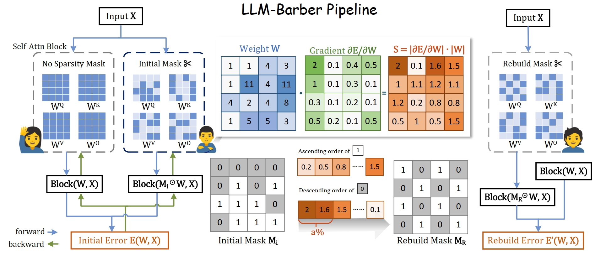

 Open Review
Large language models (LLMs) have grown significantly in scale, leading to a critical need for efficient model prun-ing techniques. Existing post-training pruning techniques pri-marily focus on measuring weight importance on converged dense models to determine salient weights for keeping. How-ever, they often overlook the changes in weight significance during the pruning process, which can lead to performance degradation in the pruned models. To address this issue, we present LLM-Barber (Block-Aware Rebuilder for Sparsity Mask in One-Shot), a novel and straightforward method that rebuilds sparsity mask of pruned models without any retraining or weight reconstruction. LLM-Barber considers block-aware reconstruction error across self-attention and MLP blocks, achieving global optimization throughout the network. Inspired by the recent discovery of prominent outliers in LLMs, LLM-Barber introduces an innovative metric that rebuilds sparsity masks using weights multiplied by gradients. Our experiments show that LLM-Barber can efficiently prune models like LLaMA and OPT families with 7B to 13B parameters on a single A100 GPU in just 30 minutes, achieving state-of-the-art results in both perplexity and zero-shot performance across various language benchmarks, thereby showcasing its robustness and effectiveness in post-training pruning.